This chapter links to the course’s interactive demos and to original
papers on the open web, and it uses MathJax for its formulas. Read it
through the course website (or download the file and open it in a
browser); a Canvas inline preview will reach neither the demos nor the
math. All chapters.
The Space of Images
CSS 551 · Advanced 3D Computer Graphics · course text
Course text · images as vectors, images as functions, the bases and filters that act on them, the operations of image processing worked on a digit and on a render, how two images are compared, and why generation is a sampling problem. Assigned by your offering’s course site; the vector view is one slide of the lecture on learned images, the rest is treated here only.
An image is a point. That sentence can be made precise in two ways, as a point of a finite-dimensional vector space with one axis per number, or as a function from the picture plane to color, and this chapter does both, shows how sampling connects them, and uses the function view to revisit aliasing and to introduce neural fields. It then does to images what linear algebra permits: changes their basis (the Fourier and cosine bases, with a transform worked by hand), convolves them with filters (a blur and an edge detector, worked on one pixel and applied to a whole render), builds pyramids of them, reshapes their histograms, compresses them the way JPEG does, and measures the distance between two of them with the two metrics every paper reports. Every claim about “the space” is then checked on a real dataset, 2,000 handwritten digits, with distances measured and pictures drawn. It closes with the fact that makes generation a sampling problem: the map from images to concepts is many-to-one, so its inverse is a distribution, and something must supply the missing choices.
Definition (image as a vector)
An \(m\times n\) RGB image is a point of the vector space
\(\mathbb{R}^{3mn}\): list its numbers in a fixed order,
\(\mathbf{x} = (r_{11}, g_{11}, b_{11}, r_{12}, \dots, b_{mn})\), and it
is one point, or equivalently the vector from the origin to that point.
Displayable images occupy the cube \([0,1]^{3mn}\). A \(128\times128\)
RGB image has \(49{,}152\) coordinates; a \(512\times512\) one has
\(786{,}432\).
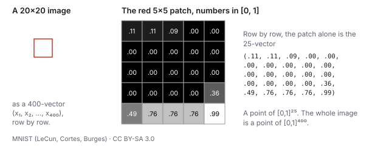
The definition, on a real image. Left: a \(20\times20\) grayscale digit from the dataset the course’s demos use. Middle: the marked \(5\times5\) patch with each pixel’s value in \([0,1]\). Right: the same 25 numbers listed row by row are a vector in \([0,1]^{25}\); the whole digit is a vector in \([0,1]^{400}\). Nothing was lost in the listing, and nothing was added: the picture and the vector are the same object.
Everything the pipeline does to images is now linear algebra on that
vector. Averaging two images is adding two vectors and halving; a blur
is a linear operator (Section 5); the difference between two frames is a vector
whose length is a measure of how much moved; the mean squared error
between an image and its noisy version is
\(\|\mathbf{x} - \mathbf{y}\|^2 / 3mn\), which is what the
forward-process demo’s PSNR readout is built from (Section 9).
Worked example (the midpoint of two images)
Take a 3 and an 8 from the dataset as vectors \(\mathbf{a}, \mathbf{b} \in [-1,1]^{400}\)
(the demos store pixels in \([-1,1]\) rather than \([0,1]\); the
geometry is the same). Their distance is
\(\|\mathbf{a} - \mathbf{b}\| = 18.5\), which is \(0.925\) per pixel on
average. The nine images below are
\((1-t)\,\mathbf{a} + t\,\mathbf{b}\) for \(t = 0, \tfrac18, \dots, 1\).
The midpoint \(t = \tfrac12\) is a double exposure: both digits are
visible at half strength, and it is not a digit anyone would write.
Its nearest neighbor in the dataset (a 3) is 0.46 per pixel away, about
as far as a real digit is from its own nearest neighbor (0.49, Section
10): the double exposure is no farther from the data than a digit is,
and still is not one. The straight line between two meaningful images leaves
the set of meaningful images almost immediately. That is the first
sign that the set is curved: it is not a subspace, where
averages of members are members.
The picture to keep is that this space is enormous and almost entirely
empty of meaning. Draw a point uniformly at random from the cube and you
get static, every time, because the set of images that look like
anything is a thin, folded, low-dimensional sheet inside it. Generation
is the problem of landing a new point on the sheet on purpose.
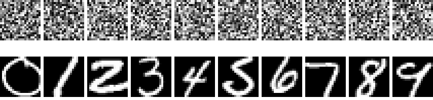
Top: ten points drawn uniformly at random from \([0,1]^{400}\). Bottom: ten points from the sheet, one per digit class. Both rows are vectors of exactly the same kind; the cube is full of the top row, and the bottom row is what the rest of this text is about.
2 · The function-space view
The vector view has a resolution baked in. A cleaner object is the image
as a function: a rule that assigns a color to every point of
the picture plane.
Definition (image as a function)
A continuous image is a function \(f : [0,1]^2 \to [0,1]^3\), from the
unit square to RGB. The set of all such functions with finite energy,
\[
\mathcal{I} \;=\; \Big\{ f : [0,1]^2 \to \mathbb{R}^3 \;\Big|\; \int_{[0,1]^2} \|f(u,v)\|^2\, du\, dv < \infty \Big\},
\]
is a vector space (the sum of two images and a scalar multiple of an
image are images), with the inner product and norm
\[
\langle f, g\rangle = \int_{[0,1]^2} f(u,v)\cdot g(u,v)\, du\, dv, \qquad
\|f\| = \sqrt{\langle f, f\rangle}.
\]
It is infinite-dimensional: no finite list of numbers pins down an
arbitrary \(f\).
Worked example (two images, one distance)
Let \(f\) be uniform mid-gray, \(f(u,v) = (\tfrac12,\tfrac12,\tfrac12)\),
and \(g\) a horizontal black-to-white ramp, \(g(u,v) = (u,u,u)\). Then
\[
\|f - g\|^2 = 3\int_0^1\!\!\int_0^1 (\tfrac12 - u)^2\, du\, dv
= 3\int_0^1 (\tfrac14 - u + u^2)\, du = 3\,\big(\tfrac14 - \tfrac12 + \tfrac13\big) = 3\cdot\tfrac{1}{12} = \tfrac14,
\]
so \(\|f-g\| = \tfrac12\). Sample both on an \(m\times n\) grid and the
per-pixel mean squared error of the rasters converges to the same
\(\tfrac{1}{4}\) as \(m\to\infty\): the finite-dimensional distance is
the Riemann sum of the function-space one. Resolution changes the count
of numbers, not the geometry.
Why bother with the function view in a course that renders rasters?
Three reasons that pay off within this text. First, several of the
pipeline’s operations are stated most honestly on functions:
anti-aliasing is filtering before sampling (the
antialiasing chapter); a texture is a function on
\([0,1]^2\) that the UV map pulls onto a surface (the
texture chapter), and a mipmap is that function at several bandwidths. Second,
a scene can be a function too: the learned-scenes chapter’s NeRF is a
network standing in for
\(F : \mathbb{R}^3\times S^2 \to \mathbb{R}^3\times\mathbb{R}_{\ge 0}\),
color and density at every point and viewing direction, with no mesh
anywhere, and the same idea (a network as a coordinate-to-value
function, an implicit or neural field representation)
now represents images, shapes, and volumes at any resolution. Third,
the generative models of the diffusion chapter are stated on vectors of
a fixed size, but what they learn is resolution-agnostic in spirit: the
sheet of natural images is a property of the functions, and a model
trained at one raster size approximates the same sheet a model at
another size approximates. Diffusion on function space directly is an
active research direction; this text stays in \(\mathbb{R}^{3mn}\),
where every statement is literal.
3 · Sampling, bases, and aliasing
The two views are related by sampling. An \(m\times n\)
raster is the function evaluated on a grid,
\(\mathbf{x}_{ij} = f(u_i, v_j)\) with \(u_i = (i - \tfrac12)/m\) and
\(v_j = (j-\tfrac12)/n\); this is the “one look per pixel at its
center” of the history chapter’s rasterization
demo. Going the other way, a raster defines a function by
reconstruction: the nearest-neighbor rule gives a
piecewise-constant \(f\) (a mosaic of \(3mn\) little box functions with
the pixel values as coefficients), bilinear interpolation gives a
continuous one, and a band-limited reconstruction gives the smoothest.
Worked example (sampling a stripe pattern)
A gray image is \(f(u,v) = \tfrac12 + \tfrac12\cos(2\pi k u)\), vertical
stripes with \(k\) periods across the picture. Sample it on 8 pixel
centers \(u_i = (i - \tfrac12)/8\).
two periods of stripes at amplitude 0.707: survives
4
0.5, 0.5, 0.5, 0.5, 0.5, 0.5, 0.5, 0.5
every sample at a zero crossing: uniform gray, the stripes are gone
8
0, 0, 0, 0, 0, 0, 0, 0
every sample at a trough: uniform black
With \(k = 8\), \(2\pi k u_i = 2\pi(i - \tfrac12)\) and the cosine is
\(-1\) at every sample; with \(k = 4\) it is \(\cos(\pi(i-\tfrac12)) = 0\).
Eight periods on eight pixels is at the sampling rate and four is at
half of it, the Nyquist limit; anything at or above it is not
represented and can masquerade as something else. Supersampling or a
blur before sampling removes the frequencies the grid cannot carry
instead of letting them alias.
Aliasing, revisited
Sampling is a linear map from \(\mathcal{I}\) to \(\mathbb{R}^{3mn}\)
and it throws information away: two different functions (the \(k = 4\)
stripes and a flat gray) produce the same raster. When the discarded
part matters (a checkerboard finer than the pixel grid, an edge
crossing pixels at an angle) the samples tell a false story. That is
aliasing, the disease of the raster-machines era, and
the sampling theorem says exactly when it cannot happen: a function
with no frequencies above \(B\) is recovered perfectly from samples
spaced closer than \(1/2B\). Supersampling, mipmaps, and motion blur
are all ways of removing frequencies the grid cannot carry
before sampling, which is why they work.
The antialiasing chapter is this
paragraph made a subject.
In this language the vector \(\mathbf{x}\in\mathbb{R}^{3mn}\) is the
list of coefficients of \(f\) in the box-function basis, and
choosing a resolution is choosing how many basis functions to keep.
Other bases exist and matter. The Fourier basis (sines and cosines of
increasing frequency, Section 4) is the one in which JPEG stores images, keeping
the low-frequency coefficients and discarding the rest (Section 8); wavelet bases
organize detail by scale (Section 6). An image is the same function in every basis;
only the numbers change.
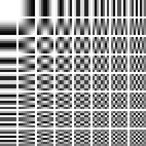
The 64 basis images of the \(8\times8\) discrete cosine transform, the basis JPEG uses. Horizontal frequency increases across, vertical frequency down. Any \(8\times8\) patch is a weighted sum of these 64 pictures, exactly as it is a weighted sum of 64 single-pixel pictures; JPEG keeps the weights near the top left and rounds the rest toward zero.
Worked example (the same digit in the cosine basis)
Transform the \(20\times20\) digit of Section 1 into the cosine basis
(400 coefficients) and rebuild it from only the \(K\times K\) lowest
frequencies.
coefficients kept
1
4
9
25
64
144
400
RMS error per pixel
0.43
0.41
0.36
0.31
0.15
0.09
0
One coefficient is the mean gray. Nine give a blob where the digit is.
Sixty-four of four hundred give a 3 anyone can read. The pixel basis
spends its 400 numbers evenly over the picture; the cosine basis puts
what matters first, which is what a compressor wants and, as the
diffusion chapter shows, what a noise schedule does to a picture in
time: the coarse structure survives longest.
4 · The Fourier basis
Definition (the two-dimensional discrete Fourier transform)
For an \(m\times n\) image \(x_{ij}\), the coefficient at horizontal frequency \(u\) and vertical frequency \(v\) is
\[
X_{uv} = \sum_{i=0}^{m-1}\sum_{j=0}^{n-1} x_{ij}\, e^{-2\pi\mathrm{i}\,(ui/m + vj/n)}, \qquad u = 0..m-1,\; v = 0..n-1,
\]
a complex number whose magnitude \(|X_{uv}|\) is the amplitude of a
sinusoidal stripe pattern with \(u\) periods across and \(v\) down, and
whose phase is that pattern’s offset. The transform is invertible,
\(x = \tfrac{1}{mn}\sum X_{uv}\,e^{+2\pi\mathrm{i}(\cdots)}\), and it is
orthogonal up to a constant, so \(\sum |x_{ij}|^2 = \tfrac{1}{mn}\sum |X_{uv}|^2\)
(Parseval): the energy of the picture is the energy of its spectrum.
The cosine transform of Section 3 is the same idea restricted to real
cosines with even symmetry, which is why it needs no complex numbers
and why JPEG chose it.
Worked example (a \(4\times4\) stripe pattern)
The image \(x_{ij} = \tfrac12 + \tfrac12\cos(2\pi i/4)\), one period of
vertical stripes across four columns, has rows \((1, \tfrac12, 0, \tfrac12)\).
Its transform has exactly three nonzero coefficients: \(|X_{00}| = 8\)
(the sum of all sixteen pixels, the mean times \(mn\)), and
\(|X_{10}| = |X_{30}| = 4\), the stripe at frequency 1 and its mirror at
frequency \(4 - 1 = 3\). Every \(v \neq 0\) coefficient is zero because
nothing varies down the columns. Sixteen numbers became three, which is
the whole reason to change basis: a pattern that is spread over every
pixel is concentrated on a few frequencies.
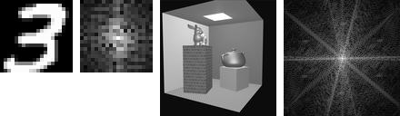
A digit and a render with their spectra, \(\log(1 + |X_{uv}|)\), zero frequency at the center. The digit’s energy sits in the middle: the 49 coefficients with \(|u|, |v| \le 3\) hold 89.6 % of it, which is the DCT rebuild table of Section 3 seen from the other side. The render’s spectrum shows streaks perpendicular to the box’s edges, because a sharp edge is a sinusoid at every frequency along the direction it crosses.
Three facts of the Fourier view organize the rest of the chapter. A
sharp edge has energy at every frequency, so any operation that
removes high frequencies blurs edges (Section 5). Sampling a picture at
\(m\) pixels keeps only frequencies below \(m/2\), and folds the rest
back onto lower ones (Section 3, and the mirror pair \(X_{10}, X_{30}\)
above is that folding). And a convolution in the picture is a
multiplication in the spectrum, which makes the next section’s
filters easy to reason about and, for large kernels, fast to compute
by transforming, multiplying and transforming back.
5 · Filters: convolution
Definition (convolution, kernel)
Convolving an image with a kernel \(K\) (a small array, here \(3\times3\)) replaces each pixel by the weighted sum of its neighborhood,
\[
y_{ij} = \sum_{a=-1}^{1}\sum_{b=-1}^{1} K_{ab}\, x_{i+a,\,j+b},
\]
with the picture’s edge pixels repeated beyond the border. It is a linear map on the image vector, the same everywhere, and every linear, shift-invariant operation on an image is a convolution with some kernel.
Two kernels do most of the work of image processing. The
Gaussian blur, here the \(3\times3\) binomial approximation
\(\tfrac{1}{16}\begin{pmatrix} 1 & 2 & 1 \\ 2 & 4 & 2 \\ 1 & 2 & 1 \end{pmatrix}\),
averages each pixel with its neighbors, weighted by distance, and
removes high frequencies: it is the prefilter of
the antialiasing chapter and
the first step of Section 6’s pyramid. The Sobel operators,
\(S_x = \begin{pmatrix} -1 & 0 & 1 \\ -2 & 0 & 2 \\ -1 & 0 & 1 \end{pmatrix}\)
and its transpose \(S_y\), estimate the horizontal and vertical
derivatives of the picture; their magnitude \(\sqrt{g_x^2 + g_y^2}\) is
an edge map and their ratio the edge’s direction.
Worked example (one pixel, three kernels)
At pixel \((12, 15)\) of the digit the \(3\times3\) neighborhood has
three identical rows \((0.99, 0.29, 0)\): ink on the left, paper on the
right, a vertical edge. Gaussian:
\(\tfrac{1}{16}\big[(1 + 2 + 1)(0.99) + (2 + 4 + 2)(0.29) + (1 + 2 + 1)(0)\big] = \tfrac{1}{16}(3.96 + 2.32) = 0.392\),
between the stroke and the paper, which is what a blur does to an edge.
Sobel \(x\): \((-1 - 2 - 1)(0.99) + 0 + (1 + 2 + 1)(0) = -3.96\); Sobel \(y\):
the rows are equal, so the top and bottom rows cancel, \(-0.004\).
Magnitude 3.96, direction \(\arctan2(-0.004, -3.96) = 180^\circ\): the
gradient points left, from paper toward ink, and the edge runs
vertically. The same kernel, applied as a learned layer, is the
convolution example of the
networks chapter.
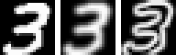
The digit, blurred, and its edge magnitude.
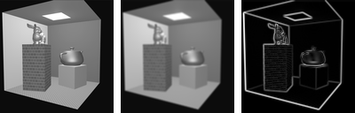
The same two kernels on the course’s \(128\times128\) Cornell render (luminance only). The blur is one pass; the edge map is the magnitude of the two Sobel responses, normalized to its maximum.
Larger kernels blur more (a Gaussian of standard deviation \(\sigma\)
needs a kernel about \(6\sigma\) wide), and the blur can be applied as
two one-dimensional passes because the Gaussian is separable, which is
what a GPU post-process does. Sharpening is the original minus a blur
(an unsharp mask); a median filter, which is not linear,
removes salt-and-pepper noise that a blur would smear. And
deconvolution, undoing a known blur, is possible only where the
blur’s spectrum is not zero, which for a Gaussian is nowhere
exactly and everywhere badly: a blurred edge cannot be recovered
from the blur alone, which is where the priors of
the diffusion chapter come in.
6 · Scale: image pyramids
A picture has content at every scale, and many operations want to
work scale by scale: a mipmap is the texture at several scales, a
coarse-to-fine registration matches large structures first, and the
U-Net of the diffusion
chapter is a pyramid with learned filters. The two classic
pyramids are built from Section 5’s blur.
Definition (Gaussian and Laplacian pyramids)
The Gaussian pyramid \(G_0, G_1, \dots\) starts from the image and repeatedly blurs and drops every other row and column, halving the size at each level. The Laplacian pyramid stores at each level what the next coarser level lost, \(L_k = G_k - \mathrm{up}(G_{k+1})\), with \(\mathrm{up}\) bilinear upsampling; the coarsest Gaussian level is kept as is. The image is recovered exactly by working back up, \(G_k = L_k + \mathrm{up}(G_{k+1})\).
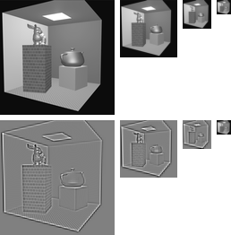
The render’s Gaussian pyramid (top) and Laplacian pyramid (bottom; mid-gray is zero). The Laplacian levels are band-pass: each holds the detail between two scales, and their root-mean-square values, 0.041, 0.049 and 0.064, grow toward the coarse end because the scene’s contrast lives in its large structures.
Worked example (the cost of a pyramid, and the exactness of the rebuild)
Four levels of a \(128\times128\) image hold \(128^2 + 64^2 + 32^2 + 16^2 = 21{,}760\)
pixels, \(1.33\) times the original, the same \(\tfrac43\) as a mipmap
(the texture chapter).
Rebuilding \(G_0\) from \(L_0, L_1, L_2\) and \(G_3\) returns the original
with a maximum error of 0 in floating point: nothing was discarded, only
rearranged by scale. That is what makes the Laplacian pyramid a
transform rather than a summary, and what lets a compressor quantize
each level differently: the coarse levels, few pixels and high energy,
get the bits.
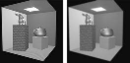
The same render halved two ways. Left: every other pixel kept, the box filter skipped, which is the sampling error of the antialiasing chapter in miniature; right: the 2×2 average that the pyramid uses. Against the exact area average, the dropped version scores 26.9 dB and the blurred one 29.4 dB, and the difference is visible in the brick and along every edge.
7 · Histograms and equalization
Forgetting where the pixels are leaves their distribution. The
histogram of an image counts pixels by value; it says nothing
about the picture’s content and a great deal about its exposure,
contrast and dynamic range. The render below has 28.6 % of its pixels
below 0.25 (the black background outside the box) and 65.6 % below 0.5:
it is a dark image with a bright light panel, a typical rendering
before tone mapping.
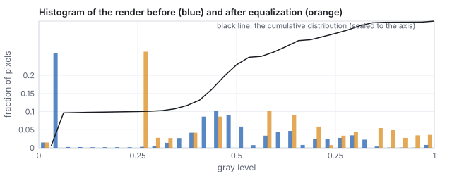
The render’s histogram before (blue) and after equalization (orange), with the cumulative distribution that defines the mapping. The black spike cannot be spread, because equalization is a function of the value: every pixel at the same gray goes to the same place.
Definition (histogram equalization)
Map each pixel value \(v\) to \(C(v)\), the fraction of pixels at or
below \(v\) (the cumulative distribution). The result’s histogram is
as flat as the data allow, and the mapping is monotone, so nothing is
reordered: brighter stays brighter.
Worked example (four values through the map)
From the render’s cumulative distribution in 32 bins: \(0.1 \mapsto 0.28\)
(the black background lands at 0.28, since 28 % of pixels are at or
below it), \(0.3 \mapsto 0.29\) (almost nothing lies between 0.1 and
0.3, so the two values nearly coincide), \(0.5 \mapsto 0.71\),
\(0.8 \mapsto 0.96\). The mean rises from 0.404 to 0.555. The middle of
the range, where most of the box’s walls sit, is stretched from
\([0.3, 0.5]\) to \([0.29, 0.71]\), which is why the equalized render
shows the walls’ shading more strongly and the background as a
flat gray.
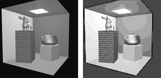
Before and after. Equalization is a global tone curve computed from the image itself; a local version (CLAHE) equalizes tiles separately with limits on the slope, and a tone-mapping operator (the illumination chapter) is a tone curve chosen for a display rather than for a flat histogram.
8 · Compression: what JPEG keeps
Section 3 showed that a digit is mostly a few low-frequency cosine
coefficients. JPEG is that observation made an algorithm: cut the
image into \(8\times8\) blocks, transform each block into the cosine
basis, divide every coefficient by an entry of a quantization
table that grows toward high frequencies, round to an integer, and
store the mostly-zero result compactly. The table is where the quality
setting lives: larger divisors, more zeros, smaller files, more error.
Worked example (one block at quality 50)
The \(8\times8\) block at \((40, 72)\) of the render (a patch of the back
wall crossing the box’s edge), pixel values 86 to 116 on the
0–255 scale. Subtract 128 and transform: the DC coefficient is
\(-193.8\) and the largest others are \(-50.9\) at vertical frequency 5
(a horizontal stripe) and \(17.5\), \(-15.7\) at low mixed frequencies.
Divide by the standard luminance table (16 at DC, 10 to 24 across the
low frequencies, 99 to 121 in the corner) and round:
\[
\begin{pmatrix} -12 & 0 & 0 & 0 & \cdots \\ 1 & -1 & 0 & 0 & \cdots \\ -1 & 1 & -1 & 0 & \cdots \\ 0 & 0 & 0 & 0 & \cdots \\ 0 & \cdots \\ -2 & 0 & \cdots \\ 0 & \cdots \\ 0 & \cdots \end{pmatrix}
\]
Seven nonzero integers of 64. Multiply back by the table and invert the
transform: the block is reconstructed with a root-mean-square error of
4.4 gray levels and a maximum error of 12, on the edge pixels. Over the
whole render at quality 50 the blocks average 7.7 nonzero coefficients
of 64 and the image is reproduced at 34.3 dB PSNR (Section 9); at
quality 90, 16.2 coefficients and 42.5 dB; at quality 10, 3.3
coefficients and 28.3 dB, with the block boundaries visible.
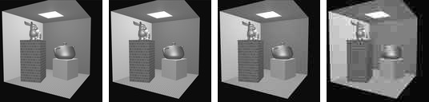
The render, then the render after cosine-transform quantization at quality 90, 50 and 10, reconstructed by the generator’s own transform. The entropy coding that turns the sparse integers into bytes is not simulated; the count of nonzero coefficients per block stands in for the file size.
Everything visual about JPEG follows from the block transform: the
\(8\times8\) blocking at low quality, because each block is quantized
on its own; the ringing beside sharp edges, because an edge needs high
frequencies that were rounded away (Section 4); and the softness of
fine texture, for the same reason. Video codecs add prediction from
neighboring blocks and previous frames and transform the residual; the
wavelet-based JPEG 2000 replaces blocks with a pyramid like Section
6’s and has no blocking. Texture compression on the GPU (BC7, ASTC)
uses fixed-rate blocks so that a texel can be fetched without decoding
its neighbors, at the cost of a worse ratio.
9 · Comparing two images: PSNR and SSIM
Definition (PSNR, SSIM)
For images \(\mathbf{x}, \mathbf{y}\) with values in \([0, 1]\), the peak signal-to-noise ratio is
\[
\text{PSNR} = 10\log_{10}\frac{1}{\text{MSE}}, \qquad \text{MSE} = \frac{1}{N}\|\mathbf{x} - \mathbf{y}\|^2,
\]
in decibels: 20 dB is an RMS error of 0.1 per pixel, 40 dB of 0.01. The structural similarity index (Wang and others, 2004) compares local means, variances and covariance,
\[
\text{SSIM} = \frac{(2\mu_x\mu_y + C_1)(2\sigma_{xy} + C_2)}{(\mu_x^2 + \mu_y^2 + C_1)(\sigma_x^2 + \sigma_y^2 + C_2)},
\]
with \(C_1 = 0.01^2\), \(C_2 = 0.03^2\), computed in a sliding window and averaged; it is 1 for identical images and near 0 for unrelated ones. This chapter computes it over the whole \(20\times20\) digit as one window.
Worked example (four comparisons with one digit)
compared with the 3
PSNR (dB)
SSIM
the same 3, noised at \(t = 0.3\) of the diffusion schedule
14.1
0.880
the same 3, blurred once
18.8
0.958
the same 3, shifted right by one pixel
12.7
0.853
a handwritten 8
6.7
0.366
For the noised digit: \(\mu_x = 0.343\), \(\mu_y = 0.380\),
\(\sigma_x^2 = 0.184\), \(\sigma_y^2 = 0.139\), \(\sigma_{xy} = 0.143\), so
\(\text{SSIM} = (2\cdot0.343\cdot0.380 + 0.0001)(2\cdot0.143 + 0.0009)/\big((0.118 + 0.145 + 0.0001)(0.184 + 0.139 + 0.0009)\big) = 0.880\).
The 8 scores lowest on both, as it should. But the shifted copy,
which any person would call the same picture, scores lower
on PSNR than the visibly noisy one and about the same on SSIM:
pixel-wise metrics compare pixels at the same position, and a
one-pixel shift moves every stroke edge onto paper.
Pitfall
Two ways a metric misleads, with the numbers above.
PSNR rewards blur. The blurred 3 scores 18.8 dB, better than the noisy one at 14.1, because blurring removes energy while noise adds it, and mean squared error counts energy. A model trained to maximize PSNR learns to hedge toward the average, which is the gray blob of the diffusion chapter’s exact denoiser at high noise; sharp, plausible detail that is in the wrong place costs more than no detail at all.
Both are blind to alignment. A one-pixel shift of a \(20\times20\) digit costs 12.7 dB, 6 dB worse than the visibly noisy copy, and drops SSIM to 0.85. Comparing a render against a photograph, or a generated image against a reference, with either metric requires the two to be registered first, and neither can judge whether a generated image is a good different image, which is why the diffusion chapter needs a metric of another kind.
Learned metrics (LPIPS: distances between the feature maps of a
trained convolutional network, Section 6 of the
networks chapter) track human judgments better than either, at the
price of depending on what the network was trained on. Every paper on
learned scenes reports all three, and the
learned-scenes chapter’s comparison table quotes them.
Hands-on
The digits are a binary file the course library reads. From css551/:
Measure the distance between two digits and find one digit’s nearest neighbor among the other 1,999:
const fs=require('fs');import('./lib/core/diffusion-nd.js').then(nd=>{
const bytes=new Uint8Array(fs.readFileSync('lib/assets/mnist/mnist-2000-20x20.bin'));
const labels=new Uint8Array(fs.readFileSync('lib/assets/mnist/mnist-2000-labels.bin'));
const data=nd.makeDataset(bytes,labels,400);const a=data.x.subarray(0,400),b=data.x.subarray(400,800);
let s=0;for(let j=0;j<400;j++)s+=(a[j]-b[j])**2;
console.log('labels',labels[0],labels[1],'distance',Math.sqrt(s).toFixed(2),'perPixel',Math.sqrt(s/400).toFixed(3));
const idx=nd.nearestIndex(a,{x:data.x.subarray(400),y:null,n:1999,d:400});
console.log('nearest other to digit 0: index',idx.index+1,'label',labels[idx.index+1],'dist/px',idx.dist.toFixed(3));});
Expected: labels 0 1 distance 21.48 perPixel 1.074 and nearest other to digit 0: index 610 label 0 dist/px 0.400. A 0 and a 1 are farther apart than a typical pair (Section 10’s 20.1); digit 0’s nearest neighbor is another 0, at 0.40 per pixel.
Reproduce the cosine-basis table of Section 3 for one more \(K\): write the \(20\times20\) DCT as two nested loops over \((u, v)\) with \(\cos\big((2i+1)u\pi/40\big)\cos\big((2j+1)v\pi/40\big)\) weights, zero all coefficients outside the lowest \(K\times K\), invert, and print the RMS error against the original. At \(K = 10\) (100 coefficients) the error falls between the table’s 0.15 (\(K = 8\)) and 0.09 (\(K = 12\)).
In the dissolving-picture demo, set \(t = 0.3\) and read the PSNR: it is the render’s analogue of the 14.1 dB row above, and the demo computes it with the formula of this section.
10 · The thin sheet, measured
Whatever the view, the images that mean something form a small region:
a curved, low-dimensional set often called the manifold of natural
images, though it is neither smooth nor a single piece. Two facts
about it make generation possible. It is thin: nearly every
direction away from a photograph leads immediately to something that is
not a photograph, which is why random points are static. And it is
structured: moving along it changes content in ways that have
names (a cat turns its head, the light warms, the lens zooms), so the
sheet has coordinates you can say in words, which is exactly what the
encoder of the networks chapter computes. Both facts can be
measured on the 2,000 digits.
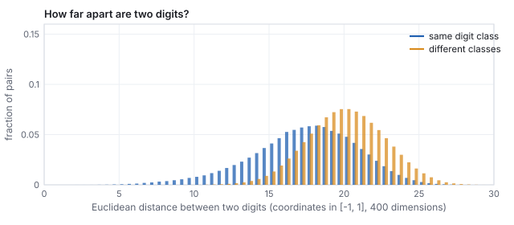
All \(1{,}999{,}000\) pairwise distances between the 2,000 digits (pixels in \([-1,1]\)). Same-class pairs average 17.4, different-class pairs 20.1. Because a digit is nearly binary, a squared distance is about four times the number of pixels where the two disagree: same-class pairs disagree on about 79 pixels, different-class pairs on about 103.
Worked example (how thin is thin?)
Three distances, all in the same units.
A digit to its nearest other digit: 9.8 on average over the 2,000. Every digit has a close neighbor.
A digit to a typical other digit: 17 to 20 (the histogram).
A digit to a random point of the cube: each coordinate of a random point is uniform on \([-1,1]\), with mean 0 and variance \(\tfrac13\), so the expected squared distance to a pixel value \(x_j\) is \(x_j^2 + \tfrac13\). For a near-binary digit (\(x_j^2 \approx 1\)) that sums to \(400\times\tfrac43 = 533\), a distance of about 23.
So the sheet is a set where every point has a neighbor at 10 while the
surrounding space sits at 23: a thin ribbon of digits threading a cube
of static. (Two random points of the cube are only 16.3 apart on
average, \(\sqrt{400\cdot\tfrac23}\); noise is close to noise. It is
the digits that are far from noise.)
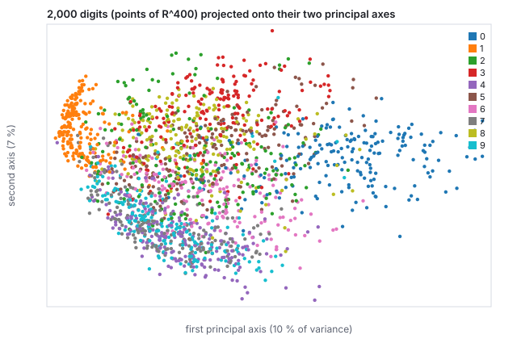
The sheet has structure: the 2,000 vectors of \(\mathbb{R}^{400}\) projected onto the two directions of greatest variance (10 % and 7 % of the total; the shadow is crude, and the classes overlap far less in 400 dimensions than here). The 1s, thin and vertical, sit alone at the left; the 0s, wide loops, at the right; the axis between them is roughly “how much ink”. A learned encoder finds coordinates like these, but many more of them and nonlinear.
11 · The concept map is not invertible
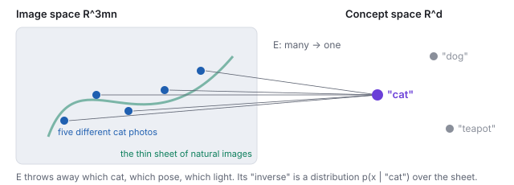
Five different photographs, one embedding. The encoder \(E\) is many-to-one by construction.
Let \(E\) be the image encoder. It is many-to-one by
design: thousands of cat photographs land on one “cat”
embedding, because throwing away which cat, which pose, and which light
is the whole point of a concept. So \(E\) has no inverse function. The
honest inverse of a concept is a conditional distribution
\(p(\mathbf{x}\mid c)\) over images, and a generator has to draw from it.
A decoder that took only the concept would be forced to return one image
per caption forever (which is what early text-to-image systems did);
something must supply the missing choices. Diffusion (its own chapter) supplies them as
noise: every sample starts from a different random point
\(\mathbf{x}_T \sim \mathcal{N}(0, I)\), which contains more than enough
arbitrary information, and the model spends its steps turning that noise
into a specific image consistent with \(c\). Different noise, different
cat; the caption steers, the noise decides. A one-to-many problem becomes
a sequence of one-to-one steps, each of which a network can learn.
Worked example (counting the missing choices)
A CLIP embedding has 512 numbers; a \(512\times512\) image has
786,432. Even if every embedding coordinate carried a full number of
information about the picture, the caption side fixes at most 512 of
the 786,432 coordinates, less than a thousandth. The other 785,920
numbers are the “which cat, which pose, which light” that the
concept discarded. The starting noise \(\mathbf{x}_T\) has 786,432
random numbers: exactly enough to fill every choice the caption left
open. That is not a coincidence of the design; it is the reason the
design works.
The same asymmetry appears in every inverse problem of this chapter.
Deconvolution (Section 5) cannot recover the high frequencies a blur
removed; JPEG decoding (Section 8) cannot recover the coefficients
that were rounded to zero; upsampling a Gaussian pyramid level cannot
recover its Laplacian. Each is many-to-one, and each has the same
honest answer: a distribution over the inputs that could have produced
the output, from which a prior over natural images picks the
plausible ones. The denoiser of the diffusion chapter is that prior in
computable form, and denoising, deblurring, inpainting and
super-resolution are all the same problem posed to it.
12 · Exercises
Exercise 1 (dimension)
A 1080p RGB frame is \(1920\times1080\). What is the dimension of the
vector space it lives in? If a video is 30 frames per second, what is the
dimension of one second of video?
Solution
\(3\cdot1920\cdot1080 = 6{,}220{,}800\). One second is 30 such vectors
stacked, \(186{,}624{,}000\) coordinates: the “3D block of
latents” of video diffusion is a block of exactly this shape,
before the autoencoder shrinks it.
Exercise 2 (function space)
Let \(f(u,v) = (u, 0, 0)\) and \(g(u,v) = (0, v, 0)\) on \([0,1]^2\).
Compute \(\langle f, g\rangle\), \(\|f\|\), and \(\|f - g\|\).
Solution
\(\langle f,g\rangle = \int\!\!\int (u\cdot0 + 0\cdot v + 0)\,du\,dv = 0\): the
images are orthogonal (no channel overlaps).
\(\|f\|^2 = \int_0^1\!\!\int_0^1 u^2\,du\,dv = \tfrac13\), so
\(\|f\| = 1/\sqrt3\); by symmetry \(\|g\| = 1/\sqrt3\), and
\(\|f-g\|^2 = \|f\|^2 + \|g\|^2 = \tfrac23\).
Exercise 3 (sampling and aliasing)
Repeat the stripe example with \(k = 6\) on the same 8-pixel grid.
What does the raster show, and what frequency does it appear to have?
Solution
\(2\pi\cdot6\cdot(i-\tfrac12)/8 = \tfrac{3\pi}{2}(i - \tfrac12)\); the
samples are \(\tfrac12 + \tfrac12\cos\) of \(\tfrac{3\pi}{4}, \tfrac{9\pi}{4}, \tfrac{15\pi}{4}, \dots\),
which is \(0.146, 0.854, 0.854, 0.146, 0.146, 0.854, 0.854, 0.146\): the
\(k = 2\) pattern, shifted. Six periods above the Nyquist limit of four
alias to \(8 - 6 = 2\) periods. The raster cannot tell \(k = 6\) from
\(k = 2\), which is what aliasing means.
Exercise 4 (the Fourier transform)
Compute the \(4\times4\) transform of the horizontal-stripe image \(x_{ij} = \tfrac12 + \tfrac12\cos(2\pi j/4)\), and of the checkerboard \(x_{ij} = \tfrac12 + \tfrac12(-1)^{i+j}\).
Solution
The horizontal stripes are the worked example transposed: \(|X_{00}| = 8\), \(|X_{01}| = |X_{03}| = 4\), all else zero. The checkerboard is \(\tfrac12 + \tfrac12\cos(\pi i)\cos(\pi j)\) up to sign, at frequency 2 in both directions: \(|X_{00}| = 8\) and \(|X_{22}| = 8\), the highest frequency the grid can hold on each axis. Sample the checkerboard on a \(2\times2\) grid and \(X_{22}\) aliases onto \(X_{00}\): a uniform gray.
Exercise 5 (a kernel by hand)
Apply the Gaussian kernel and \(S_y\) to a neighborhood whose columns are all \((0, 0.5, 1)\) from top to bottom (a horizontal edge).
Solution
Gaussian: \(\tfrac{1}{16}\big[4(0) + 8(0.5) + 4(1)\big] = 0.5\), the edge’s midpoint. \(S_y\): top row \(-(1 + 2 + 1)(0) = 0\), bottom row \((1 + 2 + 1)(1) = 4\), total \(+4\): a gradient pointing down, from dark to bright; \(S_x\) gives 0 because every row is constant. The edge magnitude is 4, the maximum a unit step can give, and the direction is \(90^\circ\).
Exercise 6 (pyramids)
How many pixels does a full Gaussian pyramid of a \(1024\times1024\) image hold, down to \(1\times1\)? If a Laplacian pyramid is stored with 8 bits per pixel at every level, how does its size compare with the image, and why would a compressor still use it?
Solution
\(\sum_{k=0}^{10} 4^k = 1{,}398{,}101\) pixels, \(1.333\) times the image (the same series as the mipmap). Stored losslessly it is a third larger; a compressor uses it because the Laplacian levels are mostly near zero (mid-gray in the figure) and quantize to few bits, and because the coarse levels, which carry the energy, are tiny. Wavelet codecs are this idea with better filters.
Exercise 7 (equalization)
An image has half its pixels at 0.2 and half at 0.8. What does equalization do to it, and what does it do to an image whose histogram is already flat?
Solution
\(C(0.2) = 0.5\), \(C(0.8) = 1\): the two values become 0.5 and 1.0. The contrast between them shrinks from 0.6 to 0.5 and the image brightens; equalization cannot spread a two-valued image over the range, since it maps values, not pixels. A flat histogram has \(C(v) = v\): the identity. Equalization is a fixed point on already-equalized images, which is one way to see that it is the right map.
Exercise 8 (JPEG)
The block of Section 8 has a coefficient of \(-50.9\) at vertical frequency 5, horizontal 0, whose table entry is 24. What does it quantize to, what does the reconstruction lose there, and what would the entry be at quality 10 (table scaled by 5)?
Solution
\(\text{round}(-50.9/24) = -2\), reconstructed as \(-48\), an error of 2.9 in that coefficient. At quality 10 the entry is 120, the coefficient rounds to 0, and the block loses its horizontal stripe entirely: the 2.5-cycle pattern across the block, the box edge, blurs into the wall. That is the smoothing visible in the quality-10 panel.
Exercise 9 (PSNR arithmetic)
Two renders differ by a uniform offset of 0.05 in every pixel. What is their PSNR? What is it if only one pixel in a hundred differs, by 0.5?
Solution
Uniform offset: MSE \(= 0.0025\), PSNR \(= 26.0\) dB. Sparse error: MSE \(= 0.01\times0.25 = 0.0025\), the same 26.0 dB. A slight global tint and a scattering of badly wrong pixels are indistinguishable to PSNR, and SSIM separates them (the offset changes \(\mu\) a little and nothing else; the sparse errors change the covariance).
Exercise 10 (the midpoint, in general)
Two images on the sheet are \(\mathbf{a}\) and \(\mathbf{b}\), and their
midpoint \(\tfrac12(\mathbf{a} + \mathbf{b})\) is not on the sheet. Show
that the midpoint is nevertheless closer to each of them than they are
to each other, and say why that does not make it a plausible image.
Solution
\(\|\tfrac12(\mathbf{a}+\mathbf{b}) - \mathbf{a}\| = \tfrac12\|\mathbf{b} - \mathbf{a}\|\),
half the distance, by algebra alone. Distance in \(\mathbb{R}^{3mn}\)
measures pixel-wise disagreement, not plausibility: the double
exposure disagrees with each parent by half as much as they disagree
with each other, and still looks like neither. Membership of the
sheet is not a matter of being near a member; it is a matter of the
detailed arrangement of all coordinates at once, which is why a
generator must learn the sheet rather than interpolate its examples.